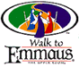

 The Walk to Emmaus is an ecumenical movement intended to strengthen local church members for Christian action in their homes, churches, and daily lives. The program is a highly structured three day event, prayerfully designed, between laity and clergy to foster a renewal of spirit in the participants. The approach seriously considers the model of Christ's servanthood and encourages Christ's disciples to act in ways appropriate to being "a servant of all."
The Valley Walk to Emmaus began conducting walks in 2001 to serve the community of faith in the West Georgia / East Alabama Region. Our membership currently represents over 150 different churches from a wide range of Protestant denominations. Walks are held two times per year at Pine Eden Christian Retreat Center in Hamilton, Georgia